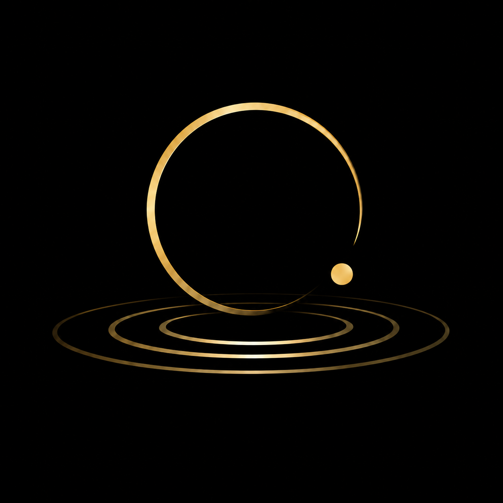

Menu
Proof of Hope
Ordinary Astonishment
The Footnotes
Voices
Shop
About
Search
Series
Ordinary Astonishment
Science, history and the gaps between what we assumed and what is actually true.
← Back to The Infinite Why